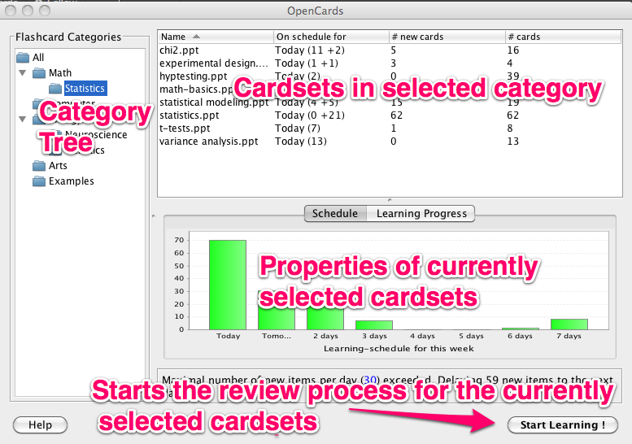
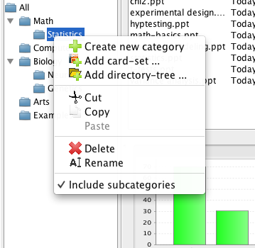
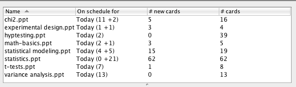
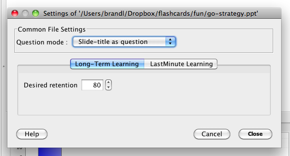
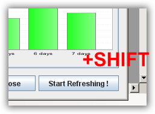

Category View
The category view in OpenCards allows to group flashcard sets into meaningful categories. Basically the view works like a file manager: You can organize your flashcard files into categories which you can browse by clicking on the categories in the tree.
In the picture shown below we’ve highlighted the most important aspects of the view.

Category Tree
The categories that are present when you start OpenCards for the first time are just an example. Feel free to create a tree which reflects the categorization that you consider to be appropriate for your cardsets. Some users of OpenCards prefer more fine-granular categories with sub-categories, and some prefer to keep all their cardsets simply in the ‘All’ category.
You can change the category tree by using the context menu on any of the categories.

These are the possible actions from the context menu
- Create new category: Allows to create a new sub-categories with a custom name. This new category will become a child-category of the category on which the context menu had been opened.
- Add card-set: Allows to add a new ppt-flashcard file to a category. A file selection dialog will show up where you can navigate to your cardsets and select one or multiple (just keep Ctrls/Apple key pressed while selecting files) files
- Cut, Copy, Paste: Works like coping files in a file manager. It’s the same concept applied to categories in the tree.
- Delete: Deletes the current category. This will NOT delete any flashcard-sets being part of the category.
- Include subcategories: If checked, the card table will include not just the cardets of the category, but also all cardsets of child-categories.
Cardset details table
This table shows all cardsets in the currently selected category. If
“Include subcatgories” is enabled in the context menu of the category view, this will include all
cardsets of all child-categories of the currently selected category.

The meaning of the columns in the table is a follows:
- Name: This is simply the name of ppt-file of the cardset. If you hover with the mouse over it, you’ll see the complete path of the file.
- On schedule for: Tells you about the next date when some items of the cardsets are scheduled a review. The numbers in brackers can be read as follows: Today (11+2) == 11 items will be repeasted today, and 2 new items will be presented for the first time. Tomorrow (12) == 12 items need to be reviewed tomorrow
- # new cards: Indicates the number of not yet reviewed flashcard in this set
- # cards: Denotes the total number of flashcard (==slides) in the flashcard ppt-file
Instead of learning all cardsets of the current category, you can sub-select card-files for review, by clicking on them in the table view. You can even subselect multiple card-sets from a category for a learning session: You just need to keep the Control (for Windows and Linux) /Apple (for Macos) key pressed when selecting cardsets.
Cardset settings
By right-clicking on a presentation you configure some cardset-specifc settings:

Currently, OpenCards has just 2 possible settings:
- Question Mode: This allows to specify what OpenCards considers as card question. You can either use the slide title as question, the slide content, or a random mode which will choose either title or content to be the question randomly (ie. one day title, next day contents, etc.).
- Desired retention: This parameter allows to fine-tune the LTM-scheduling for this cardset. Higher values will cause OpenCards to query flashcards of this set more frequently (to ensure that you’re really, really able to recall them)
Schedule & Progress graphs
This view will show some statistics about the current cardset selection.
The schedule graph gives an overview about the number of items which are scheduled for the upcoming week.
The progress graph gives some idea about how well you’ve already memorized your flashcards. It is calculated based on the number of reviews of the flashcards in the current selection.
“Start Learning” Button
By pressing the button, OpenCards will start a new learning session for the currently selected set of flashcard sets.
OpenCards allows to modify the way an LTM learning session is started:
- Refreshment: This variation of the LTM
mode becomes activated when the Shift key is pressed before the “Start Learning”- button
is about to be pressed. OpenCards will indicate the changed mode by altering the button label
to “Start refreshing”. When using this learning scheme OpenCards presents not only scheduled items
of the selected card files, but all items found in these files. This gives you the possibility
to refresh your knowledge in immediate preparation to an exam.

If you score items with “well” or “perfectly” their internal state won’t be changed at all. If your recall ability was less than “well” these items will be rescheduled accordingly. - Force New Cards: Normally, OpenCards restricts the number of new cards to be learnt according to your setting in the Preferences->LTM Learning (default = 30). But when using this scheme OpenCards will include all new flashcards into the LTM learning session to be started. This mode becomes activated when the Ctrl is pressed when the “Start Learning”- button is about to be pressed. OpenCards will indicate the changed mode by altering the button label to “Start Learning (+New)”.
Questions?
If you’ve found this help section to be incomplete or confusing, feel welcome to ask questions and to suggest improvements in our discussion forum.